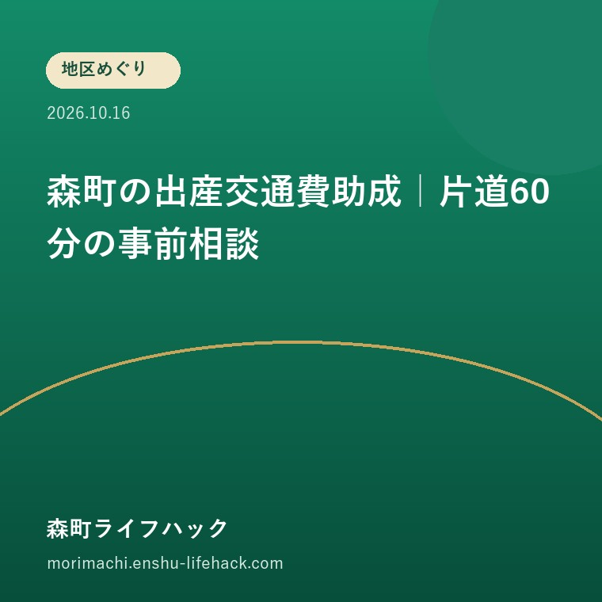

地区めぐり
森町の出産交通費助成｜片道60分の事前相談

Q. 森町の山間部に住んでいれば、出産の交通費助成は受けられる？
A. 地区名だけでは決まりません。森町に住民票があることに加え、自宅や里帰り先から最寄りの産科医療機関等まで片道概ね60分以上などの条件があります。町は片道30キロメートル以上を想定しています。住所と予定日、移動時間・距離をそろえ、健康こども課へ申請前に相談します。
山間部という呼び名より、出発する住所をそろえる
森町で出産前後の移動を支える家族には、運転、休暇の調整、子どもの世話、宿泊の準備といった負担があります。医療機関へ通う本人だけで抱えられる仕事ではありません。支援制度を読むときも、利用する家族と窓口の方が、同じ出発地と同じ移動を思い浮かべられる準備を考えたいです。
「山の方に住んでいるから対象だろうか」と迷った場合、地区名を答えの代わりにしないことが出発点です。森町の制度は、住所地や里帰り先から最寄りの施設までの移動を条件にしています。同じ地区名でも、家の位置や里帰り先が違えば、窓口へ伝える資料は変わります。
本記事は2026年10月16日に確認した森町公式案内をもとに、対象かどうかを事前相談する準備に絞ります。支給される金額の計算や、特定の住所の可否は確定しません。公式ページは2026年4月1日更新ですが、その日を新設日とする根拠は今回確認していません。
同じ制度の回数と日程を並べる方法は、遠方分娩の交通費等助成を予定表にする既存記事で扱っています。今回の焦点は、その予定表を作る前の対象確認です。住所と最寄り施設がそろわないまま、上限回数だけで家計を組まないための整理です。
正式な制度名と対象条件を読む
森町が案内する制度名は「妊産婦に対する遠方の産科医療機関（分娩施設）等への交通費等支援事業」です。遠方の施設へ通う際の交通費と、分娩待機の宿泊費の一部を助成する仕組みです。交通費も宿泊費も、使った額の全額が戻ると説明されているわけではありません。
公式案内の対象者は、妊娠・出産時に森町に住民票があり、示された条件のいずれかに該当する人です。第一の条件は、住所地に里帰り先を含め、最寄りの産科医療機関等まで片道概ね60分以上かかることです。自分が選んだ施設へ60分かかるだけで対象とは決められません。
公式ページは、概ね60分以上の移動時間について、片道30キロメートル以上を想定すると説明しています。60分と30キロメートルは、別々の支援が二つあるという意味ではありません。家族が勝手にどちらか一方だけを満たせばよいと決めず、時間と距離を両方用意して相談する材料にします。
医学上の理由等で周産期母子医療センターの利用が必要な場合も、別の条件が示されています。住所地に里帰り先を含め、最寄りの周産期母子医療センターまで概ね60分以上の移動が必要かを確認する内容です。医学上の必要性を家族だけで判定するのではなく、医師の判断理由を町へ伝える流れです。

最寄りと希望先を、同じ欄に書かない
森町の公式案内は、自己都合で特定の産科医療機関等を選択する場合を対象外としています。希望する施設までの時間が長いことと、制度で見る最寄りの施設まで遠いことは違います。希望先の選択理由を省いたまま、地図アプリの所要時間だけを提出する準備にしないようにします。
私は、家族のメモを「最寄りと思われる施設」と「受診を予定する施設」の二欄に分ける方法を提案します。同じなら同じと書き、違うなら理由を窓口へ説明できるようにします。これは町が指定する様式ではなく、相談を始めるための家族側の下書きです。
最寄りの施設をどう判断するか、地図だけで迷う場合は、その迷い自体を町へ尋ねます。受け入れ条件や医学上の事情を、この記事だけで補うことはできません。「検索で近い順に出たから確定」とせず、住所と施設名を示して、何を基準に確認するかをそろえる必要があります。
医療機関を選ぶ判断と、助成の対象判断も分けます。助成が受けられるかを先に考え過ぎて、医療上の選択を家族だけで変えることは勧めません。受診先の相談は医療機関へ、制度の扱いは町へという役割を保ち、必要な情報をそれぞれの窓口へ伝える準備をします。
里帰り先も一つの出発地として扱う
出産交通費の対象確認では、里帰り先の住所も公式案内の確認事項に含まれます。森町の自宅からの距離だけを調べても、実際の移動の出発点が違えば、相談に必要な説明が欠けます。自宅と里帰り先を混ぜず、どの場所から受診する予定なのかを具体的に伝えます。
森町の家が山間部でも、里帰り先と施設との位置関係は別です。逆に、町内の自宅の感覚だけで対象外だと決めることも避けます。窓口へは二つの住所を示し、いつ、どちらを出発地として使う予定かを説明します。変更があり得る場合も、確定済みの予定と未定の部分を分けます。
家族が実家を里帰り先として準備するなら、建物の部屋だけでなく、そこから医療機関へ通う経路も考えます。誰が運転できるか、車を使えない日はどうするか、待機宿泊を検討するかは、それぞれ別の話です。助成の対象となる移動と、家族が担う送迎の仕事を一枚の紙に並べると整理できます。
意外な点は、住所に関する制度の確認が、そのまま家族の送迎分担にもつながることです。私は、家の場所を知ることは、住みやすさを評価する言葉より先に役立つと考えます。ただし、特定の地区を出産に向かないと評価するための話ではありません。一家族の実際の経路を確かめるためです。
回数と宿泊の上限は、対象確認の後で使う
森町の公式ページは、妊婦健診の交通費について最大14往復、妊娠後期から遠方で受診する場合は最大7往復と案内しています。産婦健診は最大2往復です。上限があることと、予定する通院がすべて対象になることは違います。最初に住所等の条件を相談し、該当する扱いを確認します。
分娩待機の宿泊は、出産時の入院前の前泊分として最大14泊分が助成対象とされています。病院に入院する費用と、近隣の宿泊施設で待機する費用は同じ項目ではありません。宿泊を手配する前に、どの滞在が制度の対象となるかを町へ尋ねる材料にします。
私からの提案は、まだ認められていない助成額を、家計の確定した収入欄に置かないことです。予約や支払いの判断には、助成されない場合の負担も含めて考える必要があります。家族の予算では、見込みと確認済みを区別し、相談で分かった条件を書き足す形にします。
妊娠に関わる別の給付は、妊婦のための支援給付の記事で整理しています。交通費助成の相談をしたことだけで、別の給付の手続きまで終わるとは考えません。制度名を分けて記録すると、受け取る説明書や申請書を取り違えにくくなります。
???????????????????
?????????????????????????????????????????????????????????????????????????????????????????????????????????????????????????????????????
???????????????????????????????????????????????????????????????????????????????????????????????????????????????????????????????????????
????????????????????????????????????????????????????????????????????????????????????????????????????????????????????????????????????
事前相談に持つ住所と予定のメモ
森町の公式案内は、申請前に健康こども課へ問い合わせるよう求めています。確認事項は、氏名、生年月日、住所または里帰り先の住所、出産予定日、移動時間と移動距離です。医学上の理由で周産期母子医療センターが必要な場合は、医師の判断理由も確認する内容になっています。
問い合わせ先は健康こども課こども家庭係、電話0538-86-6330です。家族が相談の準備を手伝う場合は、本人が伝えたいことを先に確認します。電話で代理の相談がどこまでできるかも含め、必要なら窓口へ尋ねます。本人の医療に関する情報を、家族が推測で補わないようにします。
地図アプリで調べた数字は、測定した出発地と到着地が分かる形で残します。移動時間は検索した条件で変わり得るため、画面の数値だけを制度上の認定値と考えません。町へは、住所、施設名、調べた時間・距離を渡し、その計り方でよいかを確認する下書きとして使います。
公式ページの「妊娠したら（相談・支援等）」にも、妊娠期の相談や支援への案内があります。困り事が交通費だけでなく、里帰りや家族の手助けにもまたがるなら、説明する項目を分けておきます。制度ごとの可否と、暮らしの相談を一つの質問に詰め込まないためです。
良い点｜移動と待機の負担を別に扱っている
森町の交通費等支援事業は、健診への移動だけでなく、分娩前の待機宿泊も対象に含めています。私は、遠くへ通う負担を交通費だけで捉えていない点を評価します。移動する日だけでなく、出産を待つ間に家を離れる場合も、家族の段取りと出費があるためです。
申請前相談の確認事項が具体的に示されている点も利点です。家族は、何を聞かれるのか分からない状態から、住所や予定日をそろえる作業へ移れます。窓口へ行く前の準備が明らかなら、説明のやり直しを減らす可能性があります。制度を知った日に一つ作業ができる形を、私は評価します。
里帰り先を含む案内も、実際の家族の動きに合わせて確認する材料になります。住民票の住所だけを見て判断を止めないためです。私は、本人を支える家族が負担している送迎や宿泊の準備を、曖昧な「協力」で済ませず、具体的な予定へ置き換える使い方が望ましいと思います。

注文したい点｜境界の数字を自己判定させない案内
片道概ね60分、片道30キロメートル以上という案内を見た家族は、境界に近い場合に迷います。私は一事業者として、住所や経路をどのように示せば相談しやすいか、具体例のある案内を望みます。対象の拡大を当然視する話ではなく、相談の入口で家族が立ち止まる負担を減らしたいという要望です。
一方で、何分なら対象かを記事で単純に線引きすることにも、私は迷いがあります。医学上の事情や最寄り施設の扱いまで、地図の数字だけで表せないためです。個別判断を窓口へ残しながら、家族が何を用意すればよいかを具体化する方が、誤解を減らせると考えています。
今日できる小さな一歩は、自宅と里帰り先の住所を一行ずつ書くことです。次に、最寄りと思う施設と、希望先が違うかを書きます。そこで分からない部分を丸で囲めば、相談で尋ねる内容が一つ定まります。上限金額の情報を探し続けるより、対象確認へ進む準備になります。
対案・結論｜一度の相談で伝える材料をそろえる
出産交通費の事前相談では、住所、出産予定日、施設名、時間、距離、医学上の理由の有無を分けて整理します。町が確認すると案内している項目に沿って、分かるところだけ記入します。空欄をなくすために推測で書く必要はありません。未確認と記す方が、窓口で聞くべき点が伝わります。
公式ページの申請書類には、申請書兼請求書、交通費や宿泊費の領収書等の写し、里帰り先を示す書類、母子健康手帳などが挙げられています。車の移動では交通費等の領収書の扱いに例外があります。自分のケースで何を残すかは、事前相談で確認し、捨てる前に整理することを勧めます。
初回の受診費用に関する別の制度は、初回産科受診料助成の書類を整理した記事で扱っています。遠方交通費の資料と一緒の袋に入れる場合も、制度名で仕切りを付けます。同じ領収書がどの相談に必要か、提出前に窓口で確かめると取り違えを防ぎやすくなります。
家族に残す記録｜相談の答えと未定の予定を分ける
相談後は、日付、窓口名、対象判断のために追加で求められた資料、次にすることを家族のメモへ追記します。「助成を聞いた」という記憶だけでは、何が確認済みか残りません。対象可否がまだ決まっていないなら、その状態を明記し、支払い予定と助成見込みを分けて保管します。
里帰り先や施設が変わったら、以前の相談の答えをそのまま使えると思わないようにします。どの条件が変わったかを窓口へ伝え、再確認が必要かを尋ねます。申請期限や個別の助成額は今回の記事では確定していないため、相談時の質問欄に残してください。記憶より記録が役立つ場面です。
家族内で共有する資料には、住所や生年月日、受診の情報が含まれます。共有する相手を必要な範囲に絞り、広く公開しない形で管理します。送迎を頼む人に伝える予定と、申請のために保管する書類を分ければ、支援する家族へ必要以上の個人情報を渡さずに段取りを組めます。
大石の視点｜制度の数字を、住所のある暮らしへ戻す
大石浩之（磐田市／不動産業）として、私はこう考えます。家の立地は、分娩施設までの経路と、誰が運転するかに置き換えると、家族の負担として見えてきます。便利な地区かどうかを一言で評価するより、その家から必要な場所へ通える段取りを確かめる方が、相談の材料になります。
私が相談用の紙を作るなら、制度名の下へ、二つの住所を書く欄を先に置きます。次に予定日と施設名を置き、時間と距離は最後に照合します。これは体験談ではなく、私の提案です。数字だけを先に見て、対象かもしれない、違うかもしれないと家族が迷い続ける時間を減らしたいからです。
今日の結論は、地区名で自己判定せず、住所をそろえて町へ事前相談することです。受診先や里帰りの予定を一度に決め切る必要はありません。分からない点を一つ確認できれば、次の相談へ進めます。助成の条件と医療上の判断を分け、本人と家族が無理なく動ける予定へつなげたいと思います。
よくある質問
片道60分なら必ず対象になりますか？
時間だけで対象とは決まりません。妊娠・出産時の森町への住民登録や、最寄りの産科医療機関等までの移動などの条件があります。町は概ね60分を片道30キロメートル以上と想定しています。自己都合で特定施設を選ぶ場合は対象外です。住所、施設名、時間と距離をそろえ、町へ事前相談してください。
里帰り先からの移動も相談できますか？
公式案内は住所地に里帰り先を含めて対象条件を説明し、事前相談でも里帰り先の住所を確認するとしています。森町の自宅と里帰り先を別々に書き、どこからどの施設へ通う予定かを伝えます。里帰りなら一律に対象という意味ではありません。住民登録や最寄り施設などの条件を町へ確認する必要があります。
宿泊費は全額戻るのでしょうか？
公式案内は費用の一部の助成です。分娩取扱施設の近くで待機する宿泊について、入院前の前泊分を最大14泊分としています。入院費や全ての宿泊が対象という意味ではありません。個別の対象範囲や助成額、申請期限は町へ確認し、対象と分かる前に全額返金を前提に予約や家計を組まないようにします。
公式情報源
- 森町「妊産婦に対する遠方の産科医療機関（分娩施設）等への交通費等支援事業」（2026年10月確認・確認日2026年10月16日）
- 森町「妊娠したら（相談・支援等）」（2026年10月確認・確認日2026年10月16日）
最終確認日：2026-10-16。制度、運行、道路や施設の利用条件、数値は変わる場合があります。利用直前に公式情報をご確認ください。個別の判断は担当窓口、医療機関や関係する専門家へご相談ください。